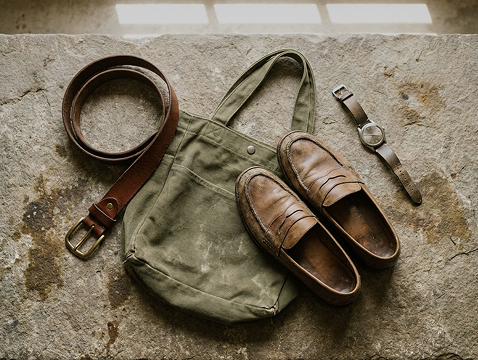

Collection method 필수

patina 전용 오브젝트 전송 키트를 발송해 드립니다. 수거 대상 사물을 해당 안심 박스에 안전하게 패킹하여 동봉된 반송 라벨과 함께 집 앞에 두시면 자동 수거가 진행됩니다.
수거 대상 물품을 소지하시고 연세대학교 인근에 위치한 patina 아카이브 창작 스튜디오룸에 직접 방문하여 전달해 주세요. 디자이너와 사물의 상태를 보며 직접 심도 깊은 컨설팅을 나눌 수 있습니다.